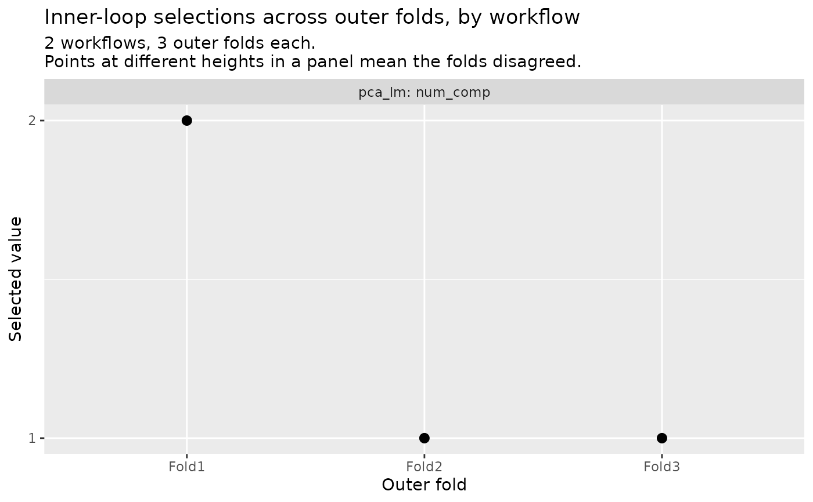
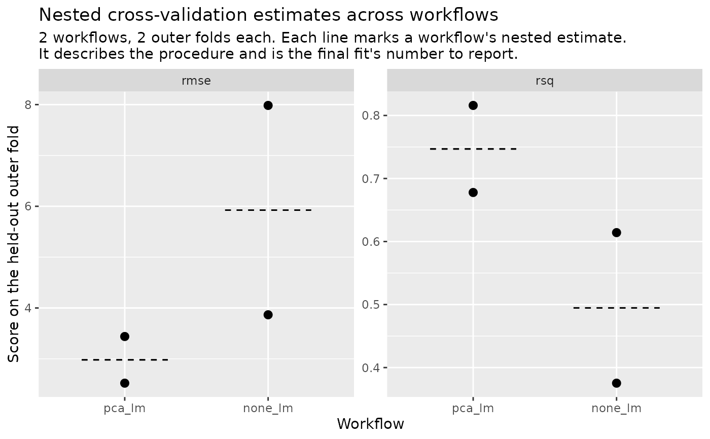

Summarize, plot and tabulate a workflow-set run
Source:R/nested-results-agreement.R, R/nested-results-plot.R, R/nested-results-print.R, and 1 more
summary.nested_results_set.RdThe three readers of one workflow's run also answer on a
nested_results_set, what nested_workflow_map() returns, keyed by
wflow_id. summary() summarizes every workflow, autoplot() draws the
two views of autoplot.nested_results() across them, and agreement()
stacks each workflow's selection table under its id.
Arguments
- x, object
A
nested_results_setfromnested_workflow_map(); for the print method, thesummary.nested_results_setthatsummary()returns.- ...
Not used; must be empty, so an argument given here is an error and not a silent no-op.
- type
Which view to draw:
"parameters"(the default) or"performance", as onautoplot.nested_results().
Value
summary() returns a summary.nested_results_set, autoplot() a ggplot
object, and agreement() a tibble. The three sections below say what each
one holds.
What summary() holds
A list of one summary.nested_results() object per workflow, named by
wflow_id in the set's order, each the summary of that workflow's run
called alone, with the orchestrator's name as the list's fn attribute.
Printing it shows the orchestrator and the workflow count, then one section per workflow holding that run's design, failed folds, selected parameters and estimate, and once at the end the note on what a nested estimate describes.
What autoplot() draws
Under type = "performance" the workflows stand along the x axis inside one
panel per metric, with one point per completed outer fold's score and a
dashed rule at each workflow's nested estimate, the value
collect_metrics() reports for it on the set.
Under type = "parameters" there is one panel per workflow and tuned
parameter, in the set's order, labelled by the id and then by the single
view's label for that parameter, with the outer folds along the x axis. Each
panel asks the single view's question of one workflow. The selected-value
axis is decided over every workflow's values at once: numeric when all are
numbers, discrete otherwise. A workflow with nothing to tune draws no panel.
What agreement() returns
wflow_id, then one column per parameter any workflow's completed fold
selected, then n and prop, with each workflow's rows as agreement() on
that run alone gives them, in the set's order. A column a workflow does not
tune holds NA in its rows; within a workflow's rows NA keeps the meaning
agreement() gives it, a fold that recorded no value. A workflow with
nothing to tune contributes no row.
Workflows that failed
The three follow the fold-state rules of the set's
collect_metrics(). A workflow with
some folds failed is read over the folds that ran, warned about once with
class nestedtune_partial_summary.
A workflow in which no fold completed is still summarized by summary(),
which describes a failed run rather than refusing. The performance view
keeps its slot on the x axis and draws nothing there, the parameters view
draws no panel for it, and agreement() leaves it out, each warning once
and naming it. A set in which no workflow completed a fold is refused by the
plots and by agreement() with class nestedtune_no_completed_folds, and
one in which no completed fold selected a parameter is refused under
type = "parameters" with class nestedtune_no_tuned_parameters.
Counting what contributed
The performance view's subtitle gives the workflow and fold counts, then, on
a line of its own and only when there is one to name, how many workflows did
not complete every fold and how many averaged a metric over fewer folds than
they completed. summary() names the folds and prints each workflow's count
per metric.
The two counts are separate. A workflow that ran whole can still be named by
the second, since a completed fold can score NA on one metric while
scoring the others, and a metric no completed fold scored is counted there
while drawing no rule.
A tuned parameter whose id is wflow_id cannot be tabulated beside the
set's own column and is refused with class
nestedtune_collect_name_collision; one whose id is n or prop is
refused as agreement() refuses it, the workflow named in front.
Examples
data(mtcars)
rec <- recipes::recipe(mpg ~ ., data = mtcars) |>
recipes::step_pca(recipes::all_predictors(), num_comp = tune::tune())
wf <- workflows::workflow(rec, parsnip::linear_reg())
set.seed(1)
folds <- nested_resamples(
mtcars,
outside = rsample::vfold_cv(v = 2),
inside = rsample::vfold_cv(v = 2)
)
# One tuned workflow and one baseline, on the same nested design.
wset <- workflowsets::workflow_set(
preproc = list(pca = rec, none = recipes::recipe(mpg ~ ., data = mtcars)),
models = list(lm = parsnip::linear_reg())
)
set.seed(2)
res <- nested_workflow_map(wset, resamples = folds, grid = data.frame(num_comp = 1:2))
summary(res)
#>
#> ── Nested cross-validation results for a workflow set ─────────────────
#> Orchestrator: `nested_tune_grid()` (grid search)
#> Workflows: 2
#>
#> ── Workflow "pca_lm" ──
#>
#> Outer resamples: 2-fold cross-validation
#> Outer folds: 2 requested, 2 completed
#>
#> ── Selected parameters
#> ✔ num_comp: 1 (all 2 completed folds agree)
#>
#> ── Estimate (2 of 2 outer folds)
#> rmse (standard): 2.98
#> rsq (standard): 0.747
#>
#> ── Workflow "none_lm" ──
#>
#> Outer resamples: 2-fold cross-validation
#> Outer folds: 2 requested, 2 completed
#>
#> ── Selected parameters
#> ℹ No tuned parameters.
#>
#> ── Estimate (2 of 2 outer folds)
#> rmse (standard): 5.93
#> rsq (standard): 0.495
#>
#> ℹ A nested estimate describes the tune-and-fit procedure, not a model
#> you can deploy. Build that with `nested_final_fit()`, and report
#> this estimate as what its procedure achieves.
agreement(res)
#> # A tibble: 1 × 4
#> wflow_id num_comp n prop
#> <chr> <int> <int> <dbl>
#> 1 pca_lm 1 2 1
autoplot(res, type = "parameters")

autoplot(res, type = "performance")
